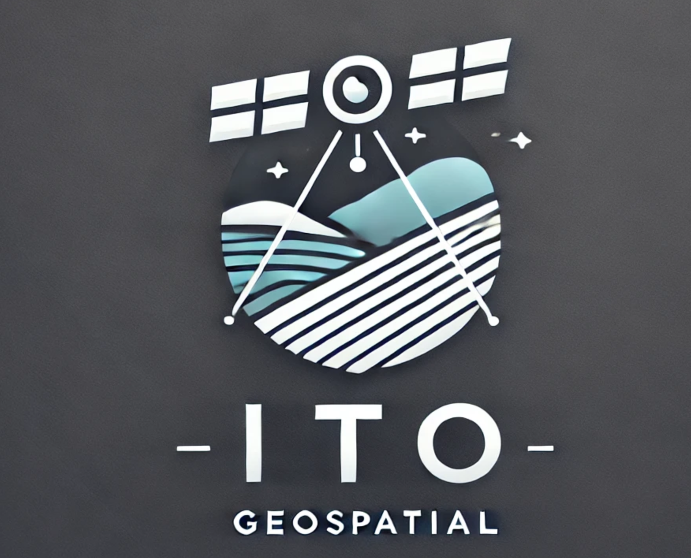

Ian Van Dusen
Founder & Principal Geospatial Scientist
Drives strategy, advanced elevation modeling, and bespoke automation tooling. Ian keeps projects grounded in client goals while ensuring the science stays sharp.